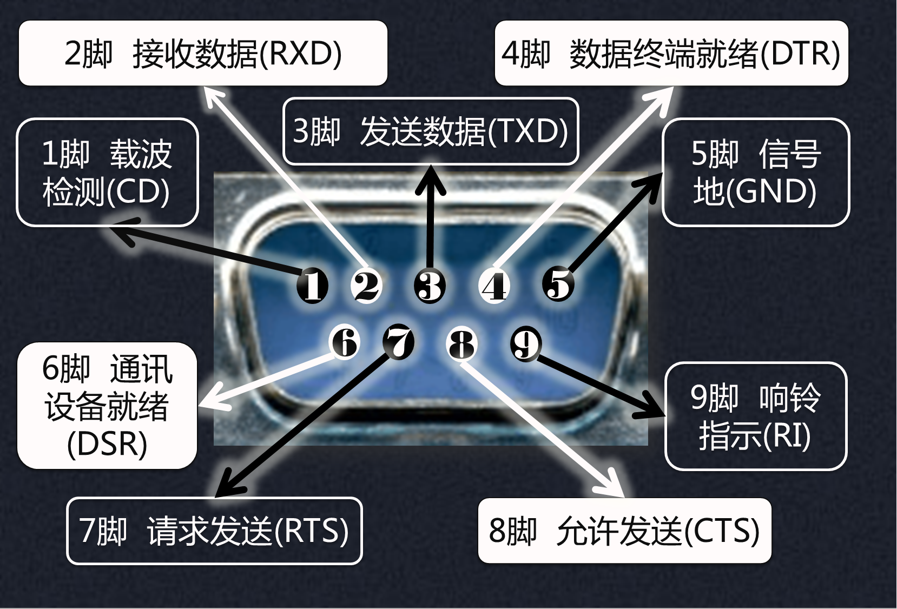
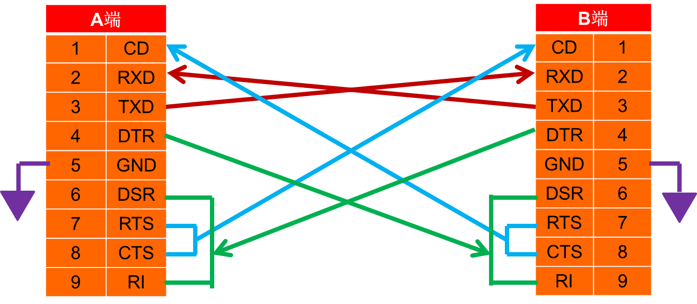
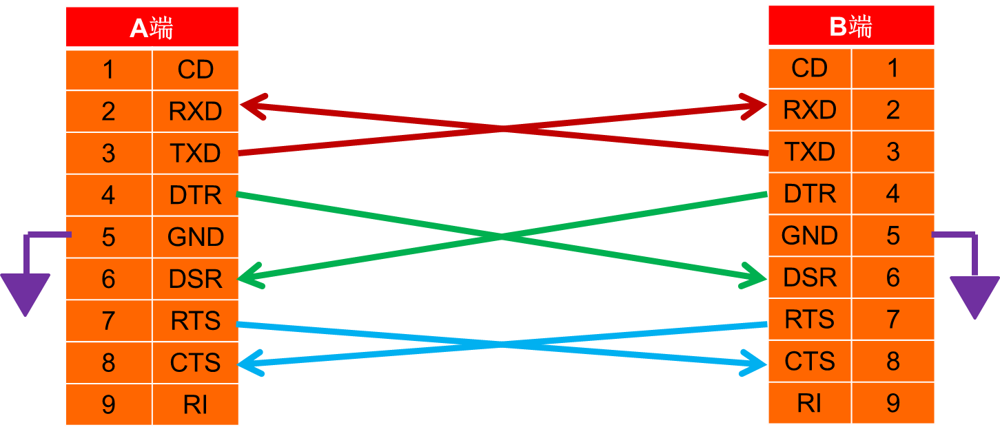
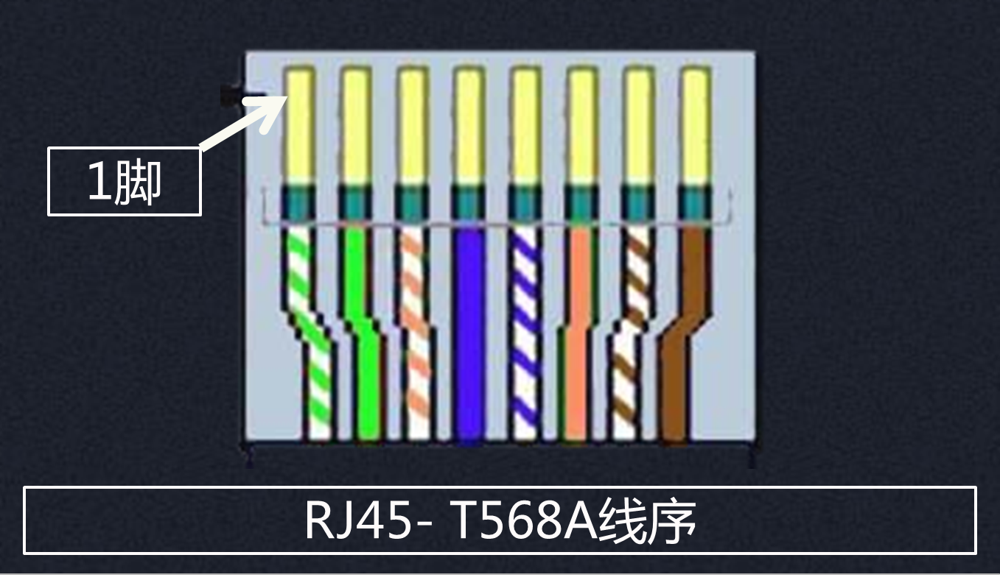
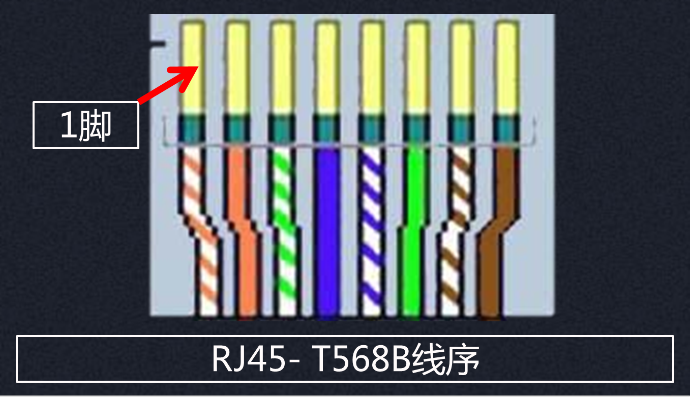
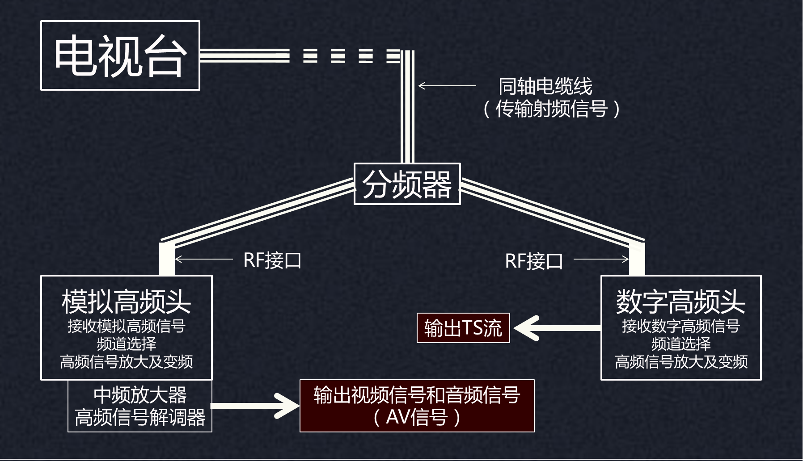
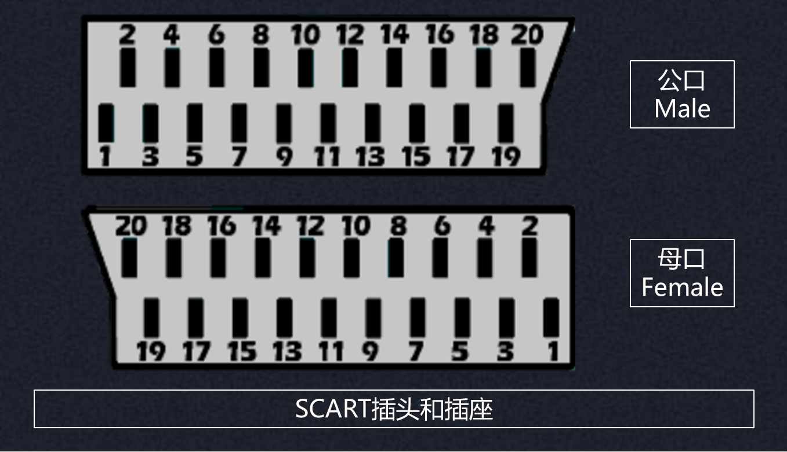

机顶盒知识点
资料目录

这里是机顶盒开发相关的知识点合辑， 是走进机顶盒开发的第一步...
版权声明：未经许可，请勿转载！
©2016 · OneLib智库 · 挖掘自己的财富
接口模块
机顶盒的主要接口
本章主要介绍了机顶盒的各种接口，包括 CVBS、RJ45、RS232、S端子、YPbPr、HDMI、RF、Scart、SPDIF以及USB等。
RS232(串口)
EIA-RS-232C
RS232，即推荐标准232(recommend standard 232)， 这是美国电子工业协会(EIA)制定的一种异步串行物理接口标准。 其全称为“EIA-RS-232C”。
| EIA-RS-232C | |
| 缩写 | 描述 |
| EIA | 美国电子工业协会 |
| RS | 推荐标准(Recommended Standard) |
| 232 | 标识号 |
| C | RS232的最新一次修改(1969)，还有RS232B、RS232A |
RS232可以用来做什么
RS232可以连接两台电脑，使这两台电脑进行通信。如两台电脑用户进行实时聊天，或一台电脑向另一台传送文件。
RS232可以连接电脑与单片机，使电脑和单片机进行通信。使用电脑控制单片机进行AD采样，单片机会将结果反馈给电脑。
RS232可以连接两个单片机，使这两个单片机之间进行通信。CDMA模块向GPS模块请求位置信息并接收和显示。
RS232有什么特性
距离
最远距离为50英尺
双向
双向传输，全双工通讯，20kbps
负逻辑
采用负逻辑传输数据量
RS232接口的结构是怎样的

| RS232接口的结构 | |||||
| 引脚 | 缩写 | 描述 | 引脚 | 缩写 | 描述 |
| 1 | CD | 载波检测 | 6 | DSR | 通讯设备就绪 |
| 2 | RXD | 接收数据 | 7 | RTS | 请求发送 |
| 3 | TXD | 发送数据 | 8 | CTS | 允许发送 |
| 4 | DTR | 数据终端就绪 | 9 | RI | 响铃指示器 |
| 5 | GND | 信号地 | |||
RS232的标准连线法

当A端的设备准备好后，发出DTR（数据设备就绪）信号， 传至B端的RI（响铃）和DSR（通讯设备就绪）。 这样，只要A准备好（DTR），B端就会产生呼叫（RI）并准备好（DSR）。
注意到A端的RTS（请求发送）、CTS（允许发送）和B端的CD（载波检测）连在一起， 则说明A一旦请求发送（RTS）将立即得到允许（CTS）， 并使B端检测到载波信号（CD）。 A端的TXD与B端的RXD相连，A发送，B接收。
RS232的简化连线法

原来RTS和CTS是用来询问和回答是否可以传输数据。 但在这种连接方式下，就成了纯粹告诉对方自己是否可以进行通讯。 此时RTS和DTR都可以用来对数据流进行控制。
A端的DTR（数据设备就绪）发出信号， 当B端准备好后，B端的DTR（数据设备就绪）向A端的DSR（通讯设备就绪）发出信号。 接下来就可以通过RTS（请求发送）和DTR（允许发送）来控制通信。
RS232只有9针的型号吗
- 还有25针的型号
- 目前很少人使用25针D型
- 9针和25针连接器间的对应关系如左图所示
RS232的应用举例（Java软件层代码）
| 代码 | 说明 |
| CommPortIdentifier s = CommPortIdentifier.getPortIdentifier(“COM2”); | // 获取COM识别号s：识别号为COM2 |
| SerialPort port = (SerialPort) s.open(“Read”, 30); | // 打开COM2口：只读方式、等待30秒 |
| port.setSerialPortParams( | // 配置串口属性 |
| 1200, | // 波特率（Baud Rate）为1200 |
| 8, | // 数据位（Data Bits）为8位 |
| 1, | // 停止位（Stop Bits） |
| 0 | // 奇偶校验（Parity） |
| ); | // 配置完毕 |
| // …… | // 其他操作 |
| 注意到这里有一些比较重要的属性：COM口，波特率，数据位，停止位，校验位；其他还有回调函数等的设置。 | |
机顶盒的RS232接口有什么用
升级
通过串口连接电脑和机顶盒进行机顶盒的升级
调试
开发阶段对机顶盒调试；提供电路工作情况
网口RJ45
网卡接口RJ45
RJ45是IEC(60)603-7标准化的8针插孔或8孔插座， 它用于局域网和ADSL用户的设备连接， 有两种线序（直通线、交叉线）
RJ45网卡接口类型
RJ45网线插头的线序
T568A线序
- 白/绿：输入数据（+）
- 绿：输入数据（-）
- 白/橙：输出数据（+）
- 蓝：保留为电话使用
- 蓝/白：保留为电话使用
- 橙：输出数据（-）
- 白/棕：保留为电话使用
- 棕：保留为电话使用
T568B线序
- 白/橙：输出数据（+）
- 橙：输出数据（-）
- 白/绿：输入数据（+）
- 蓝：保留为电话使用
- 蓝/白：保留为电话使用
- 绿：输入数据（-）
- 白/棕：保留为电话使用
- 棕：保留为电话使用
RJ45两种线序使用场景
制作一条网线
这里以B线序为例，我们平时使用的路由器、电脑接口都可按此线序。
USB
Universal Serial BUS（通用串行总线）
USB是即插即用 | 热插拔接口， 它定义了外部总线标准，规范了电脑与外部设备的连接和通讯， 支持鼠标、调制解调器和键盘等设备， 替代串口和并口，电脑必配接口
USB的优势
使用方便
热插拔：不需要重复“关机-插拔设备-开机”；即插即用：驱动程序和应用软件可以自动启动，无需用户干预，不需要用户配置硬件。
标准统一
不同于串并口繁杂的标准，使用USB的设备都遵循相同的标准；这样在使用USB的外设时，可以更加便捷，兼容性好
连接设备多
可以连接多个设备。 PC上有多个USB接口，每个接口还可以作为USB HUB再同时连接多个设备使用 ( 注：最高可连接至 127 个设备 )
高传输速率
USB2.0接口的最高传输率目前可达48Mb／s，比串口快了整整400倍，比并口也快了四十多倍。
独立供电
USB接口提供了内置电源。USB电源能向低压设备提供5V的电源，新的设备就不需要专门的交流电源。
支持多媒体
提供对电话的两路数据支持，可支持异步以及等时数据传输,使电话可与PC集成,共享语音邮件及其它特性。
USB的不同型号
USB的引脚
USB的接口通信
USB协议的版本
| USB 1.0 | USB 1.1 | USB 2.0 | USB 3.0 | |
| 最大传输速率 | 1.5Mbps(192KB/s) | 12Mbps(1.5MB/s) | 480Mbps(60MB/s) | 5Gbps(640MB/s) |
| 速率 | 低速（Low-Speed） | 全速（Full-Speed） | 高速（High-speed） | 超速（Super-Speed） |
| 最大输出电流 | 500mA | 500mA | 500mA | 900mA |
| 推出时间 | 1996年1月 | 1998年9月 | 2000年4月 | 2008年11月 |
机顶盒的USB接口
RF射频
radio frequency，RF射频接口
俗称有线电视接口， 它是最早的播放设备连接方式， 是视频信号（CVBS）和音频信号（Audio）混合编码。
早期使用模拟电视信号的时候，通过RF接口来连接信号源和模拟电视；现在使用数字电视信号，则是使用RF接口连接信号源和数字电视机顶盒。
RF接口特点
传输信号
- 模拟信号（视音频混合）
- 数字信号（TS流）
- 模拟信号 + 数字信号
布局
- 传输距离远
- 只需要一根线，美观简易
- 布线完备
RF接口和高频头
布局
模拟电视信号与有线电视信号布局
SCART
俗称“扫把头”
欧洲大部分音视频设备， 它有多组Scart接口， female(孔)，21芯插座， 具有视频输入输出、隔行RGB输入、伴音输入输出、s端子输入等信号。 上图中，右侧红框内的接口即为SCART接口。
SCART引脚图

多组SCART
第一组
两个用于识别信号的管脚：
8脚 - 视频/射频信号模式选择
16脚 - RGB/视频信号选择
| 引脚 | 信号 |
| 1 | 右声道伴音输出信号 |
| 2 | 右声道伴音输入信号 |
| 3 | 左声道伴音输出信号 |
| 4 | 伴音信号地 |
| 5 | 蓝色信号地 |
| 6 | 左声道伴音输入信号 |
| 7 | 蓝色输入信号 |
| 8 | CVBS/射频信号模式选择 |
| 9 | 绿色信号地 |
| 10 | 悬空 |
| 11 | 绿色输入信号 |
| 12 | 悬空 |
| 13 | 红色信号地 |
| 14 | 地 |
| 15 | 红色输入信号 |
| 16 | RGB/CVBS信号选择 |
| 17 | 输入输出视频信号地 |
| 18 | RGB/CVBS信号选择地 |
| 19 | 射频输出信号 |
| 20 | CVBS输入信号 |
| 21 | 公用地（外壳） |
RGB/CVBS信号
第二组
无识别信号，根据实际信号手动切换OSD；一般包含了视频／亮度信号输入和色度信号输入等
| 引脚 | 信号 |
| 1 | 右声道伴音输出信号 |
| 2 | 右声道伴音输入信号 |
| 3 | 左声道伴音输出信号 |
| 4 | 伴音信号地 |
| 5 | 蓝色信号地 |
| 6 | 左声道伴音输入信号 |
| 7 | —— |
| 8 | 视频/射频信号模式选择 |
| 9 | 通用地 |
| 10 | 悬空 |
| 11 | —— |
| 12 | 悬空 |
| 13 | 色度信号地 |
| 14 | 地 |
| 15 | 色度输入信号 |
| 16 | —— |
| 17 | 视频亮度信号地 |
| 18 | —— |
| 19 | 射频输出信号 |
| 20 | 视频/亮度输入信号 |
| 21 | 通用地（外壳） |
亮度-色度信号
第三组
如果包含第三路Scart接口，则大致与第一组Scart接口的定义相同，只是将射频输出更改为监视器输出。
| 引脚 | 信号 |
| 1 | 右声道伴音输出信号 |
| 2 | 右声道伴音输入信号 |
| 3 | 左声道伴音输出信号 |
| 4 | 伴音信号地 |
| 5 | 蓝色信号地 |
| 6 | 左声道伴音输入信号 |
| 7 | 蓝色输入信号 |
| 8 | 视频射频信号模式选择 |
| 9 | 绿色信号地 |
| 10 | 悬空 |
| 11 | 绿色输入信号 |
| 12 | 悬空 |
| 13 | 红色信号地 |
| 14 | 地 |
| 15 | 红色输入信号 |
| 16 | RGB/视频信号选择 |
| 17 | 输入输出视频信号地 |
| 18 | RGB/视频信号选择地 |
| 19 | 监视器输出信号 |
| 20 | 视频输入信号 |
| 21 | 公用地（外壳） |
监视器
SCART接口的操作要求
CVBS
composite video broadcast signal，复合视频接口
它是一种模拟波形， 包含色差，亮度，同步信号， 是第一代视频显示输出方式，CVBS可以连接机顶盒和电视机。上图中，黄色的接口即为CVBS接口。
CVBS特点
信号质量
通过CVBS传输电视信号的质量。传输的图像质量相对射频电视广播信号要好一些，但相对其它视频信号还是比较差的。
制式
复合视频信号有不同的制式。由于行频、场频与色度信号的编码方式不同复合视频信号又有PAL、NTSC、SECAM制式之分。
CVBS内容拓展
S端子
Separate Video
S端子, 即S-Video,其全称是Separate Video，或称“独立视讯端子”将视频数据分成两个单独的讯号（光亮度和色度）模拟视频讯号的接口。 S端子（常见型）实际上是一种五芯接口，由两路视频亮度信号、两路视频色度信号和一路公共屏蔽地线共五条芯线组成。 它 将亮度和色度分离传输，避免了相互干扰，其最大分辨率为1024 x 768。
S端子的种类介绍
S端子针脚定义
- ①有部分显卡7针s端子与标准不一样 查看
- ②7针接口即能分离出一路4针标准S端子信号，又能分离出一路标准的AV视频信号。
- ③7针的S-Video接口可以直接使用4针S端子线，不必另行购买连接线。
- ④9针S-Video端口把7针的下部的空档位变成了2个针脚位而已。 只要显卡色差输出针脚定义规范，无论是7针还是9针的S端子都可以使用 ATI9针S端子转色差线 输出色差，因为标准色差输出针脚都在上部。
- ⑤S端子线为单根多芯结构，长度一般在3M之内，最长不能超过5M
S端子的工作原理
S端子的优势
解决信号重叠
两种讯号分开，使光亮度的讯号有更大的带宽，从而解决了讯号重叠的问题
传送更多讯息
由于分开传输，影像讯号转送更多的讯息，图像在低失真的情况下，原画再生
提高清晰度
同AV 接口相比，无需光亮色分离和解码，避免了图像失真，提高图像清晰度
S端子的不足
品质不足
品质上而言，S-Video是component讯号中最差的一种，远不如其他更为复杂的component影像讯号（如RGB）
兼容性差
S-Video与更高阶component影像的差别在于，讯号合为一条讯号进行传送，色度的讯号须先编码，而且NTSC、PAL或SECAM等影像讯号透过S-Video进行传送时皆有不同的编码方式。所以为了使讯号间达到完全兼容性，必须兼顾S-Video接头与色度编码方式两者的兼容性。
YPbPr
色差分量接口
它是传输视频信号的接口， 美国电子工业协会EIA-770.2a标准， 包含了亮度信号+蓝色差信号+红色差信号， 图像质量高于CVBS和S端子
YPbPr的各路信号
YPBPR三路信号是如何工作的
三路信号需要同步，彼此相差5ns内。
详情参看 YPbPr模拟分量视频信号接口
YPbPr与S端子的区别
清晰度更高
YPbPr端口将模拟信号Y、PB、PR分开，使用三条独立电缆传输，其清晰度有更好的提高。
避免图像失真
YPbPr多传输PB、PR两种信号，避免了两路色差混合解码并再次分离的过程，避免图像失真。
信号互不干扰
YPbPr用三条线缆独立传输，并且每条线缆都采用了很好的屏蔽措施，保证了信号间在传输之间互不产生干扰。
HDMI
High Definition Multimedia Interface，HDMI
HDMI有什么优势
易用性
- 接口体积小
- 传输距离远（15米）
- 只需要一根线即可
高智能
- 自动配置
- 自动为显示器输送合适格式
- 双向通信
高质量
- 无需A/D和D/A转换，无损失
- 消除分量视频中柔和度和拖尾现象
- 1080p视频尤为明显
版权保护
- 宽带数字内容保护(HDCP)
- 防止未经授权复制
- “撤销密钥”应对密钥或算法破解
其他优势
- 满足1080P的分辨率
- 支持DVD Audio等数字音频格式
- 支持八声道96kHz或立体声192kHz
HDMI有哪些型号
| 类型A | 类型B | 类型C | 类型D | |
| 图片 | ||||
| 应用场合 | 平板电视或视频设备 | 专业场合 | 小设备，应用范围很小 | 便携和车载设备 |
| 特点 | 最常见，现在几乎都使用这种 | 极罕见，带宽很大 | 尺寸小，比A型小了1/3 | 最新类型，尺寸更小 |
| 尺寸 | 19针，宽13.90mm，厚4.45mm | 29针，宽21.30mm | 19针，宽10.42mm，厚2.4mm | 近似与miniUSB |
本章小结
Summary
本章资料是我在2013年入职康佳集团前收集、入职后整理的资料， 这次整理资料特地把这些资料纳入管理。
参考文档
References
| # | 文档名称 | 作者 |
| 1 | 接口模块知识点收集 | 林晓州、莫敦悦、曲宝玲、陈双民、赵宇翔 |
版本信息
Version Information
| # | 发布日期 | 版本 | 更新内容 | 作者 | 审核 |
| 1 | 2016年03月01日 | V1.0 | 整合资料 | 林晓州 | —— |